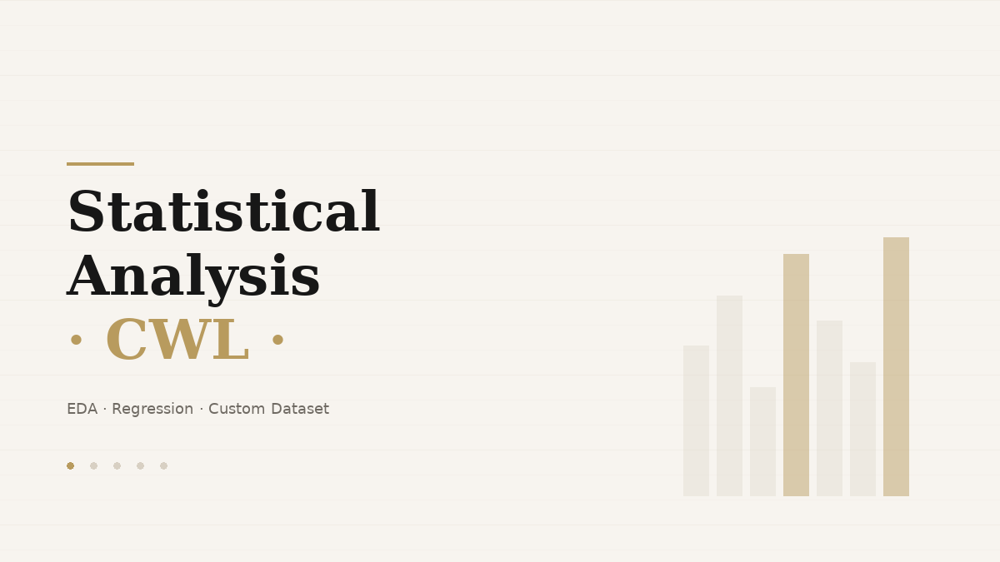

← Back to featured projects
CWL Statistical Analysis
Statistical analysis and modeling project based on a custom dataset from Clash of Clans clan war leagues. The project combines descriptive analytics, exploratory data analysis and regression-based performance modeling.
PythonEDARegressionCustom DatasetStatistics
Transforms a custom dataset into structured insights through statistical analysis and modeling, demonstrating a full analytical workflow.

What this project shows
- Data preparation and exploratory analysis on a custom-collected dataset.
- Use of descriptive statistics, outlier analysis and correlation analysis.
- Linear and logistic regression applied to real performance variables.
- A from-scratch regression implementation that reinforces the technical foundations behind the higher-level tooling.
Assets
Kept as a featured piece because the dataset and the theme make it noticeably more memorable than generic coursework.